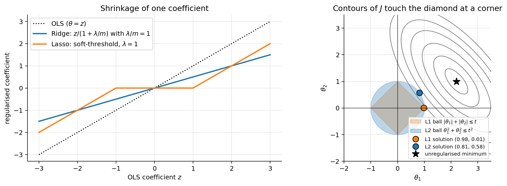
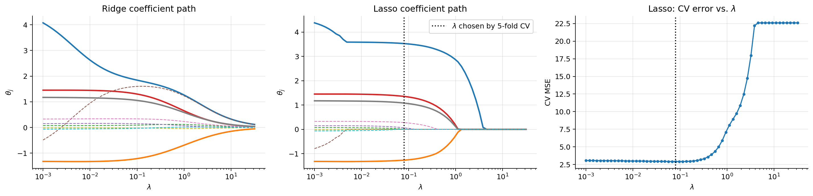
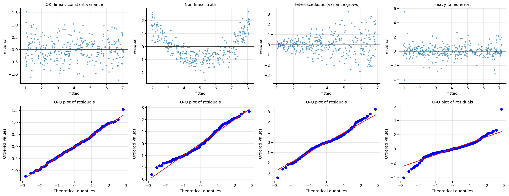
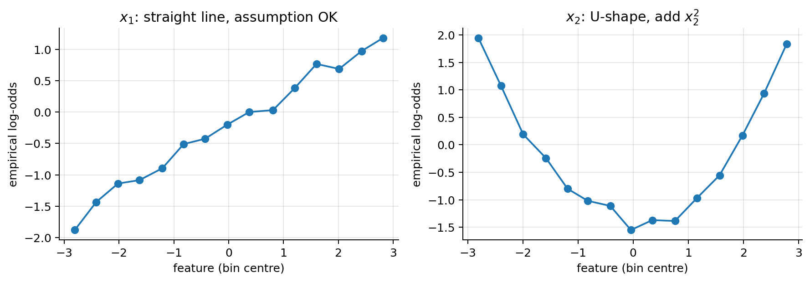

import numpy as np
import matplotlib.pyplot as plt
import warnings; warnings.filterwarnings("ignore", category=FutureWarning)
plt.rcParams.update({"figure.dpi": 90, "axes.grid": True, "grid.alpha": 0.3,
"axes.spines.top": False, "axes.spines.right": False})
rng = np.random.default_rng(1)03 · Regularisation, Input Variables and Assumptions
For both linear and logistic regression
1. Why regularise?
Three problems that all show up as large, unstable parameters:
- Overfitting: many features (or a high polynomial degree) relative to \(m\). The model fits the noise, and the fitted \(\theta_j\) become huge with alternating signs.
- Collinearity: when features are strongly correlated, \(\mathbf{X}^\top\mathbf{X}\) is nearly singular, so many very different \(\boldsymbol{\theta}\) fit almost equally well. Small changes in the data change \(\boldsymbol{\theta}\) a lot (section 9.4).
- Separable classes in logistic regression: the MLE does not exist and \(\lVert\boldsymbol{\theta}\rVert\to\infty\) (notebook 02).
Regularisation adds a penalty on the size of \(\boldsymbol{\theta}\): we accept a little more training error (bias) in exchange for a more stable model (less variance).
# degree-15 polynomial on 20 points: plain least squares vs. Ridge
f_true = lambda x: np.sin(2 * np.pi * x)
x = np.sort(rng.uniform(0, 1, 20)); y = f_true(x) + rng.normal(0, 0.2, 20)
grid = np.linspace(0, 1, 400)
def poly(x, d): # features x, x^2, ..., x^d, standardised with the training stats
P = np.vander(x, d + 1, increasing=True)[:, 1:]
return P
d = 15
P, Pg = poly(x, d), poly(grid, d)
mu, sd = P.mean(0), P.std(0)
Xd = np.c_[np.ones(len(x)), (P - mu) / sd]; Xg = np.c_[np.ones(len(grid)), (Pg - mu) / sd]
def ridge(X, y, lam):
L = np.eye(X.shape[1]); L[0, 0] = 0 # do not penalise the intercept
return np.linalg.solve(X.T @ X + lam * L, X.T @ y)
fig, axes = plt.subplots(1, 3, figsize=(14, 3.6), sharey=True)
for ax, lam in zip(axes, [0.0, 1e-3, 1.0]):
th = np.linalg.lstsq(Xd, y, rcond=None)[0] if lam == 0 else ridge(Xd, y, lam)
ax.scatter(x, y, color="k", s=18); ax.plot(grid, f_true(grid), "g--", lw=1)
ax.plot(grid, Xg @ th, lw=2); ax.set_ylim(-2, 2)
ax.set_title(rf"$\lambda={lam}$, $\max_j|\theta_j|$ = {np.abs(th[1:]).max():.1f}")
axes[0].set_ylabel("y"); plt.suptitle("Degree-15 polynomial: no penalty / small / moderate L2 penalty", y=1.03)
plt.tight_layout(); plt.show()
2. The regularised loss
\[ J_{\text{reg}}(\boldsymbol{\theta}) = \underbrace{J(\boldsymbol{\theta})}_{\text{fit the data}} + \underbrace{\lambda\,R(\boldsymbol{\theta})}_{\text{keep }\boldsymbol{\theta}\text{ small}}, \qquad \lambda \ge 0 . \]
| Name | Penalty \(R(\boldsymbol{\theta})\) | Effect |
|---|---|---|
| L2 / Ridge / weight decay | \(\sum_{j=1}^n \theta_j^2 = \lVert\boldsymbol{\theta}\rVert_2^2\) | shrinks all coefficients smoothly |
| L1 / Lasso | \(\sum_{j=1}^n \lvert\theta_j\rvert = \lVert\boldsymbol{\theta}\rVert_1\) | sets some coefficients exactly to 0 (feature selection) |
| Elastic Net | mix of both | sparse and stable with correlated features |
Two rules that always apply:
- Do not penalise the intercept \(\theta_0\) (the sums start at \(j=1\)). Penalising it would pull predictions towards 0 for no reason; the intercept just sets the average level.
- Standardise the features first. The penalty treats every \(\theta_j\) equally, but the size of \(\theta_j\) depends on the units of \(x_j\) (income in euros vs. thousands of euros gives a coefficient 1000× different). Without scaling, the penalty is arbitrary.
\(\lambda\) is a hyperparameter: \(\lambda = 0\) is the unregularised model; \(\lambda\to\infty\) forces all \(\theta_{j\ge1}\to 0\) (constant model). It is chosen by cross-validation (notebook 00).
Conventions differ between books and libraries (factors \(\frac12\), \(\frac1m\), or \(C = 1/\lambda\) in scikit-learn’s LogisticRegression and SVC). They only rescale \(\lambda\).
3. L2 regularisation (Ridge regression)
For linear regression we use
\[ J(\boldsymbol{\theta}) = \frac{1}{2m}\Big[\lVert\mathbf{X}\boldsymbol{\theta} - \mathbf{y}\rVert^2 + \lambda\sum_{j=1}^n\theta_j^2\Big]. \]
Let \(\mathbf{L} = \mathrm{diag}(0, 1, \dots, 1)\) so that \(\sum_{j\ge1}\theta_j^2 = \boldsymbol{\theta}^\top\mathbf{L}\boldsymbol{\theta}\).
Gradient (Fact 2 of notebook 01): \(\;\nabla J = \frac{1}{m}\big[\mathbf{X}^\top(\mathbf{X}\boldsymbol{\theta}-\mathbf{y}) + \lambda\mathbf{L}\boldsymbol{\theta}\big]\).
Gradient descent = “weight decay”. For \(j\ge1\) the update is
\[ \theta_j \leftarrow \theta_j\Big(1 - \frac{\alpha\lambda}{m}\Big) - \frac{\alpha}{m}\sum_i\big(h_{\boldsymbol{\theta}}(\mathbf{x}^{(i)}) - y^{(i)}\big)x^{(i)}_j : \]
each step first shrinks \(\theta_j\) by a constant factor, then applies the usual data gradient.
Closed form. Setting the gradient to zero:
\[ \boxed{\boldsymbol{\theta}^*_{\text{ridge}} = (\mathbf{X}^\top\mathbf{X} + \lambda\mathbf{L})^{-1}\mathbf{X}^\top\mathbf{y}} \]
This inverse always exists for \(\lambda>0\) (even with duplicated features or \(n > m\)). Proof: for \(\mathbf{v}\ne 0\), \(\;\mathbf{v}^\top(\mathbf{X}^\top\mathbf{X} + \lambda\mathbf{L})\mathbf{v} = \lVert\mathbf{X}\mathbf{v}\rVert^2 + \lambda\sum_{j\ge1}v_j^2\). The second term is \(>0\) unless \(v_1=\dots=v_n=0\); in that case \(\mathbf{X}\mathbf{v} = v_0\mathbf{1}\neq\mathbf{0}\), so the first term is \(>0\). The matrix is positive definite, hence invertible, and \(J\) is strictly convex: a unique minimum. \(\blacksquare\)
How it shrinks (one standardised feature). Take one feature with \(\frac1m\sum_i (x^{(i)})^2 = 1\), centred \(y\), no intercept, and let \(z = \frac{1}{m}\sum_i x^{(i)}y^{(i)}\) (this is the OLS solution). Expanding, \(J(\theta) = \frac{1}{2}\big(1 + \frac{\lambda}{m}\big)\theta^2 - z\theta + \text{const}\), whose minimum is
\[ \theta_{\text{ridge}} = \frac{z}{1 + \lambda/m} = \frac{\theta_{\text{OLS}}}{1 + \lambda/m} . \]
Ridge divides the coefficient by a constant factor. It gets smaller but never exactly zero.
4. L1 regularisation (Lasso)
\[ J(\boldsymbol{\theta}) = \frac{1}{2m}\lVert\mathbf{X}\boldsymbol{\theta} - \mathbf{y}\rVert^2 + \lambda\sum_{j=1}^n\lvert\theta_j\rvert \]
\(|\theta_j|\) has a kink at 0, so there is no closed form. It is solved by coordinate descent (scikit-learn) or proximal / sub-gradient methods. It is still convex (a sum of convex functions).
Why exact zeros? The one-feature case. Same setting as above: we must minimise
\[ g(\theta) = \tfrac12(\theta - z)^2 + \lambda\lvert\theta\rvert . \]
- If \(\theta>0\): \(g'(\theta) = \theta - z + \lambda = 0 \Rightarrow \theta = z - \lambda\), valid only if \(z > \lambda\).
- If \(\theta<0\): \(g'(\theta) = \theta - z - \lambda = 0 \Rightarrow \theta = z + \lambda\), valid only if \(z < -\lambda\).
- Otherwise (\(|z| \le \lambda\)) neither case applies and the minimum is at the kink, \(\theta = 0\). (Check: the subgradient of \(g\) at \(0\) is the interval \([-z-\lambda,\,-z+\lambda]\), which contains \(0\) exactly when \(|z|\le\lambda\).)
Together, this is the soft-thresholding operator:
\[ \boxed{\theta_{\text{lasso}} = \mathrm{sign}(z)\,\max\big(|z| - \lambda,\, 0\big)} \]
A feature whose OLS coefficient is smaller than \(\lambda\) in absolute value is switched off. Bigger ones are shifted towards 0 by exactly \(\lambda\). Intuition: the L2 penalty’s slope \(2\theta\) vanishes near 0, so it never quite pushes all the way to zero. The L1 penalty pushes with constant force \(\lambda\) however small \(\theta\) is.
Geometric picture. Minimising \(J + \lambda R\) is equivalent to minimising \(J\) subject to \(R(\boldsymbol{\theta})\le t\) for some \(t\). The solution is where the elliptical contours of \(J\) first touch the constraint region. The L1 ball is a diamond with corners on the axes, and the contours usually hit a corner, where some \(\theta_j=0\). The L2 ball is round, so the contact point generically has all coordinates non-zero.
z = np.linspace(-3, 3, 400); lam = 1.0
fig, axes = plt.subplots(1, 2, figsize=(12, 4.2))
axes[0].plot(z, z, "k:", label="OLS ($\\theta=z$)")
axes[0].plot(z, z / (1 + lam), lw=2, label=r"Ridge: $z/(1+\lambda/m)$ with $\lambda/m=1$")
axes[0].plot(z, np.sign(z) * np.maximum(np.abs(z) - lam, 0), lw=2, label=r"Lasso: soft-threshold, $\lambda=1$")
axes[0].set_xlabel(r"OLS coefficient $z$"); axes[0].set_ylabel("regularised coefficient"); axes[0].legend()
axes[0].set_title("Shrinkage of one coefficient")
# constraint-region picture
A, B = np.meshgrid(np.linspace(-2, 3.5, 300), np.linspace(-2, 3.5, 300))
th_ols = np.array([2.2, 1.0]); M = np.array([[1.0, 0.6], [0.6, 0.8]])
Q = M[0, 0] * (A - th_ols[0])**2 + 2 * M[0, 1] * (A - th_ols[0]) * (B - th_ols[1]) + M[1, 1] * (B - th_ols[1])**2
ax = axes[1]
ax.contour(A, B, Q, levels=[0.1, 0.4, 0.9, 1.6, 2.35, 3.4], colors="gray", linewidths=1)
t = 1.0
ax.fill([t, 0, -t, 0], [0, t, 0, -t], alpha=0.3, color="C1", label=r"L1 ball $|\theta_1|+|\theta_2|\leq t$")
circ = plt.Circle((0, 0), t, alpha=0.3, color="C0", label=r"L2 ball $\theta_1^2+\theta_2^2\leq t^2$"); ax.add_patch(circ)
# solve the two constrained problems numerically on the grid
inside1 = np.abs(A) + np.abs(B) <= t; inside2 = A**2 + B**2 <= t**2
k1 = np.argmin(np.where(inside1, Q, np.inf)); k2 = np.argmin(np.where(inside2, Q, np.inf))
ax.plot(A.flat[k1], B.flat[k1], "o", color="C1", ms=9, mec="k", label=f"L1 solution ({A.flat[k1]:.2f}, {B.flat[k1]:.2f})")
ax.plot(A.flat[k2], B.flat[k2], "o", color="C0", ms=9, mec="k", label=f"L2 solution ({A.flat[k2]:.2f}, {B.flat[k2]:.2f})")
ax.plot(*th_ols, "k*", ms=12, label="unregularised minimum")
ax.axhline(0, color="k", lw=0.6); ax.axvline(0, color="k", lw=0.6); ax.set_aspect("equal")
ax.set_xlabel(r"$\theta_1$"); ax.set_ylabel(r"$\theta_2$"); ax.legend(fontsize=8, loc="lower right")
ax.set_title("Contours of $J$ touch the diamond at a corner")
plt.tight_layout(); plt.show()
5. Elastic Net
\[ J(\boldsymbol{\theta}) = \frac{1}{2m}\lVert\mathbf{X}\boldsymbol{\theta} - \mathbf{y}\rVert^2 + \lambda\Big[\rho\,\lVert\boldsymbol{\theta}\rVert_1 + \tfrac{1-\rho}{2}\lVert\boldsymbol{\theta}\rVert_2^2\Big], \qquad \rho\in[0,1]. \]
Lasso’s weakness: among a group of highly correlated features it tends to keep one at random and drop the others, and it can select at most \(m\) features. The L2 part makes correlated features share the weight (grouping effect) while the L1 part still produces sparsity. Use it when you want feature selection but have correlated features.
6. Regularisation as a prior (MAP estimation)
In notebooks 01–02 the unregularised loss was the negative log-likelihood. Now also put a prior on the parameters and maximise the posterior (Bayes’ rule, \(p(\boldsymbol{\theta}\mid\mathcal{D}) \propto p(\mathcal{D}\mid\boldsymbol{\theta})\,p(\boldsymbol{\theta})\)):
\[ \hat{\boldsymbol{\theta}}_{\text{MAP}} = \arg\max_{\boldsymbol{\theta}}\big[\log p(\mathcal{D}\mid\boldsymbol{\theta}) + \log p(\boldsymbol{\theta})\big] = \arg\min_{\boldsymbol{\theta}}\big[\underbrace{-\log p(\mathcal{D}\mid\boldsymbol{\theta})}_{\text{loss}} \underbrace{-\log p(\boldsymbol{\theta})}_{\text{penalty}}\big]. \]
- Gaussian prior \(\theta_j\sim\mathcal{N}(0,\tau^2)\): \(\;-\log p(\boldsymbol{\theta}) = \frac{1}{2\tau^2}\sum_j\theta_j^2 + \text{const}\) → L2.
- Laplace prior \(p(\theta_j)\propto e^{-|\theta_j|/b}\): \(\;-\log p(\boldsymbol{\theta}) = \frac{1}{b}\sum_j|\theta_j| + \text{const}\) → L1. (The Laplace density has a sharp peak at 0, a “belief” that many coefficients are exactly zero.)
For linear regression with noise variance \(\sigma^2\) the negative log-likelihood is \(\frac{1}{2\sigma^2}\lVert\mathbf{X}\boldsymbol{\theta} - \mathbf{y}\rVert^2 + \text{const}\), so with the Gaussian prior, MAP = Ridge with \(\lambda = \sigma^2/\tau^2\): a strong prior (small \(\tau\)) or noisy data (large \(\sigma\)) means more regularisation.
7. Choosing \(\lambda\); coefficient paths
A coefficient path shows each \(\theta_j\) as \(\lambda\) varies. Below: a dataset with 10 features, only 4 of which truly matter.
from sklearn.linear_model import Ridge, Lasso, LassoCV
from sklearn.preprocessing import StandardScaler
m, n = 120, 10
Xr = rng.normal(size=(m, n)); Xr[:, 5] = Xr[:, 0] + 0.1 * rng.normal(size=m) # feature 5 ~ copy of feature 0
theta_true = np.array([3, -2, 0, 1.5, 0, 0, 0, 1, 0, 0])
y = Xr @ theta_true + rng.normal(0, 1.5, m)
Xs = StandardScaler().fit_transform(Xr)
lams = np.logspace(-3, 1.5, 60)
paths_l1 = np.array([Lasso(alpha=a, max_iter=50000).fit(Xs, y).coef_ for a in lams])
paths_l2 = np.array([Ridge(alpha=a * m).fit(Xs, y).coef_ for a in lams])
cv = LassoCV(alphas=lams, cv=5, max_iter=50000).fit(Xs, y)
fig, axes = plt.subplots(1, 3, figsize=(16, 4))
for ax, P, name in [(axes[0], paths_l2, "Ridge"), (axes[1], paths_l1, "Lasso")]:
for j in range(n):
ax.plot(lams, P[:, j], lw=2 if theta_true[j] != 0 else 1, ls="-" if theta_true[j] != 0 else "--")
ax.set_xscale("log"); ax.set_xlabel(r"$\lambda$"); ax.set_ylabel(r"$\theta_j$"); ax.set_title(f"{name} coefficient path")
axes[1].axvline(cv.alpha_, color="k", ls=":", label=r"$\lambda$ chosen by 5-fold CV"); axes[1].legend()
mse_path = cv.mse_path_.mean(1)
axes[2].plot(cv.alphas_, mse_path, "o-", ms=3); axes[2].axvline(cv.alpha_, color="k", ls=":")
axes[2].set_xscale("log"); axes[2].set_xlabel(r"$\lambda$"); axes[2].set_ylabel("CV MSE"); axes[2].set_title("Lasso: CV error vs. $\\lambda$")
plt.tight_layout(); plt.show()
print("true theta :", theta_true)
print("OLS (no penalty) :", np.linalg.lstsq(np.c_[np.ones(m), Xs], y, rcond=None)[0][1:].round(2))
print("lasso (CV lambda) :", cv.coef_.round(2))
true theta : [ 3. -2. 0. 1.5 0. 0. 0. 1. 0. 0. ]
OLS (no penalty) : [ 4.62 -1.32 0.07 1.45 0.15 -1.03 0.32 1.17 -0.01 -0.07]
lasso (CV lambda) : [ 3.53 -1.27 0.01 1.35 0.06 0. 0.28 1.08 -0. -0. ]Solid lines are the true non-zero coefficients, dashed the irrelevant ones. Ridge shrinks everything gradually. Lasso switches coefficients off one by one as \(\lambda\) grows, and at the CV-chosen \(\lambda\) it has dropped most irrelevant features. Look at feature 0 and its near-copy, feature 5: OLS gives them large coefficients of opposite sign (4.6 and −1.0, pure collinearity noise), while Lasso keeps feature 0 and switches feature 5 off. Which one of a correlated pair Lasso keeps is somewhat arbitrary. (Coefficients are on the standardised scale, so they differ slightly from theta_true.)
Rule of thumb: search \(\lambda\) on a log grid by \(k\)-fold CV, with the scaling done inside the CV loop (scikit-learn Pipeline).
8. Regularised logistic regression
Same idea, added to the cross-entropy:
\[ J(\boldsymbol{\theta}) = -\frac{1}{m}\sum_{i=1}^m\Big[y^{(i)}\log h_{\boldsymbol{\theta}}(\mathbf{x}^{(i)}) + (1-y^{(i)})\log(1-h_{\boldsymbol{\theta}}(\mathbf{x}^{(i)}))\Big] + \frac{\lambda}{2m}\sum_{j=1}^n\theta_j^2, \]
\[ \nabla J = \frac{1}{m}\Big[\mathbf{X}^\top\big(\sigma(\mathbf{X}\boldsymbol{\theta}) - \mathbf{y}\big) + \lambda\mathbf{L}\boldsymbol{\theta}\Big]. \]
- The Hessian gains \(+\frac{\lambda}{m}\mathbf{L}\), so the problem becomes strictly convex and always has a finite solution, even for separable data.
- L1 works the same way and gives sparse logistic models.
- In scikit-learn,
LogisticRegressionis L2-regularised by default withC = 1/λ(defaultC=1). LargeC= weak regularisation.
The next cell fits degree-6 polynomial features (27 features from 2 inputs) with three values of C.
from sklearn.datasets import make_moons
from sklearn.pipeline import make_pipeline
from sklearn.preprocessing import PolynomialFeatures
from sklearn.linear_model import LogisticRegression
Xm, ym = make_moons(n_samples=120, noise=0.3, random_state=0)
g1, g2 = np.meshgrid(np.linspace(-2, 3, 300), np.linspace(-1.5, 2, 300)); G = np.c_[g1.ravel(), g2.ravel()]
fig, axes = plt.subplots(1, 4, figsize=(18, 3.8))
for ax, C in zip(axes[:3], [1e5, 1.0, 0.01]):
model = make_pipeline(PolynomialFeatures(6), StandardScaler(), LogisticRegression(C=C, max_iter=20000)).fit(Xm, ym)
Z = model.predict_proba(G)[:, 1].reshape(g1.shape)
ax.contourf(g1, g2, Z, levels=20, cmap="coolwarm", alpha=0.6); ax.contour(g1, g2, Z, levels=[0.5], colors="k")
ax.scatter(Xm[:, 0], Xm[:, 1], c=ym, cmap="coolwarm", edgecolor="k", s=15)
w = model[-1].coef_[0]
ax.set_title(f"C={C} (λ=1/C)\n" + r"$||\theta||_2$" + f" = {np.linalg.norm(w):.1f}")
# separable data: ||theta|| during gradient descent, with and without L2
Xs2 = np.c_[np.ones(40), np.r_[rng.normal(-2, 0.7, 20), rng.normal(2, 0.7, 20)]]; ys2 = np.r_[np.zeros(20), np.ones(20)]
sig = lambda t: 1 / (1 + np.exp(-t))
for lam, lab in [(0, r"$\lambda=0$"), (1.0, r"$\lambda=1$")]:
th = np.zeros(2); norms = []
for it in range(20000):
g = (Xs2.T @ (sig(Xs2 @ th) - ys2) + lam * np.r_[0, th[1]]) / 40
th -= 1.0 * g; norms.append(abs(th[1]))
axes[3].plot(norms, label=lab)
axes[3].set_xscale("log"); axes[3].set_xlabel("GD iteration"); axes[3].set_ylabel(r"$|\theta_1|$"); axes[3].legend()
axes[3].set_title("Separable data: without L2, $\\theta$ grows forever")
plt.tight_layout(); plt.show()
9. Input variables
The model is linear in \(\boldsymbol{\theta}\), but we decide what goes into \(\mathbf{x}\). Most of the practical skill with linear models is here.
9.1 Numerical features: scaling
- Standardise (\(\tilde{x}_j = (x_j-\mu_j)/\sigma_j\)) before gradient descent (conditioning, notebook 01) and before any regularisation (fair penalty).
- The fitted predictions of an unregularised model don’t depend on the scaling (the coefficients just rescale), but the regularised ones do.
- Compute \(\mu_j, \sigma_j\) on the training data only and reuse them on validation/test/production data.
- Interpretation after standardising: \(\theta_j\) = effect of a one-standard-deviation increase of \(x_j\). This makes coefficients comparable across features.
9.2 Categorical features: one-hot encoding and the dummy trap
A categorical variable with \(K\) levels (e.g. vehicle type ∈ {car, van, motorbike}) cannot enter as 1, 2, 3: that would impose an order and equal spacing. Instead create indicator (dummy) variables \(d_k = \mathbb{1}[\text{level} = k]\).
Dummy variable trap. With an intercept, use only \(K-1\) dummies. Proof: every row has exactly one \(d_k=1\), so \(d_1 + \dots + d_K = 1 = x_0\). A column of \(\mathbf{X}\) is then a linear combination of others, so \(\mathbf{X}^\top\mathbf{X}\) is singular (notebook 01, section 8) and the coefficients are not identifiable. Dropping one level (the reference level) fixes it; each remaining \(\theta_k\) is then “the difference between level \(k\) and the reference level”. (With L2 regularisation, keeping all \(K\) is also fine, since the penalty makes the solution unique.)
- Ordinal variables (low < medium < high) can be coded as integers if equal spacing is plausible, otherwise one-hot.
- High-cardinality categories (postcode, car model): group rare levels, or use target/frequency encoding computed inside the CV folds to avoid leakage.
9.3 Non-linear effects and interactions
Because the model only needs to be linear in \(\boldsymbol{\theta}\), we can add any fixed transformation of the inputs:
| Pattern in the data | Feature to add |
|---|---|
| curved relationship | \(x^2, x^3\), splines, bins |
| multiplicative / skewed variables (income, prices, counts) | \(\log x\) (or \(\log(1+x)\)) |
| effect of \(x_1\) depends on \(x_2\) | interaction \(x_1x_2\) |
| periodic (hour, month) | \(\sin(2\pi t/T), \cos(2\pi t/T)\) |
For logistic regression the same features make the decision boundary curved (section 8). Adding features increases variance, so pair it with regularisation and CV.
9.4 Collinearity
Collinearity does not hurt predictions much, but it makes individual coefficients unreliable. Under the linear-model assumptions (section 10) the OLS estimator has
\[ \mathbb{E}[\hat{\boldsymbol{\theta}}] = \boldsymbol{\theta}, \qquad \mathrm{Cov}(\hat{\boldsymbol{\theta}}) = \sigma^2(\mathbf{X}^\top\mathbf{X})^{-1}. \]
Proof. \(\hat{\boldsymbol{\theta}} = (\mathbf{X}^\top\mathbf{X})^{-1}\mathbf{X}^\top\mathbf{y}\) with \(\mathbf{y} = \mathbf{X}\boldsymbol{\theta} + \boldsymbol{\varepsilon}\) gives \(\hat{\boldsymbol{\theta}} = \boldsymbol{\theta} + (\mathbf{X}^\top\mathbf{X})^{-1}\mathbf{X}^\top\boldsymbol{\varepsilon}\). Take the expectation (\(\mathbb{E}[\boldsymbol{\varepsilon}]=0\)) for the first claim. For the second, with \(\mathbf{A} = (\mathbf{X}^\top\mathbf{X})^{-1}\mathbf{X}^\top\): \(\mathrm{Cov} = \mathbf{A}\,\sigma^2\mathbf{I}\,\mathbf{A}^\top = \sigma^2(\mathbf{X}^\top\mathbf{X})^{-1}\). \(\blacksquare\)
When columns are nearly dependent, \(\mathbf{X}^\top\mathbf{X}\) has a tiny eigenvalue, its inverse a huge one, and the variance of the coefficients explodes. The standard diagnostic is the variance inflation factor, \(\mathrm{VIF}_j = \frac{1}{1-R_j^2}\), where \(R_j^2\) is the \(R^2\) of regressing \(x_j\) on all other features; VIF \(> 5\)–\(10\) signals a problem. Remedies: drop or combine features, or use Ridge.
def fit_many(rho, reps=500, m=100):
est = []
for _ in range(reps):
x1 = rng.normal(size=m); x2 = rho * x1 + np.sqrt(1 - rho**2) * rng.normal(size=m)
Xc = np.c_[np.ones(m), x1, x2]; yc = 1 + 2 * x1 + 2 * x2 + rng.normal(size=m)
est.append(np.linalg.lstsq(Xc, yc, rcond=None)[0][1:])
return np.array(est)
fig, axes = plt.subplots(1, 2, figsize=(10, 4), sharex=True, sharey=True)
for ax, rho in zip(axes, [0.0, 0.98]):
E = fit_many(rho)
ax.scatter(E[:, 0], E[:, 1], s=5, alpha=0.5); ax.plot(2, 2, "r*", ms=12)
ax.set_title(f"corr(x1,x2)={rho}, VIF={1/(1-rho**2):.0f}\nstd of $\\hat\\theta_1$ = {E[:,0].std():.2f}")
ax.set_xlabel(r"$\hat\theta_1$"); ax.set_ylabel(r"$\hat\theta_2$")
plt.suptitle("500 datasets, true $\\theta_1=\\theta_2=2$: collinearity makes coefficients unstable (their sum stays stable)", y=1.03)
plt.tight_layout(); plt.show()
9.5 Other practical points
- Missing values: impute (median/mode, fitted on training data) and add a “was missing” indicator if missingness may be informative.
- Outliers have a large influence on squared loss (residuals are squared). Inspect them; consider \(\log\) transforms, clipping, or a robust loss (Huber).
- Leakage features: variables that are only known after the outcome (e.g. “claim paid amount” when predicting fraud at claim opening). They make validation scores great and production useless.
10. Assumptions of linear regression
The model \(y = \boldsymbol{\theta}^\top\mathbf{x} + \varepsilon\) is fit by least squares no matter what. The assumptions decide whether the estimates, their uncertainty and the predictions can be trusted.
| # | Assumption | Formal | What breaks if violated | How to check |
|---|---|---|---|---|
| 1 | Linearity | \(\mathbb{E}[y\mid\mathbf{x}] = \boldsymbol{\theta}^\top\mathbf{x}\) | biased predictions, systematic errors | residuals vs. fitted show a curve |
| 2 | Exogeneity | \(\mathbb{E}[\varepsilon\mid\mathbf{x}] = 0\) (no omitted confounders) | coefficients biased, can’t be read causally | domain knowledge |
| 3 | Independent errors | \(\varepsilon^{(i)}\) independent | standard errors too small, over-confidence | residuals vs. time/order, autocorrelation |
| 4 | Homoscedasticity | \(\mathrm{Var}(\varepsilon\mid\mathbf{x}) = \sigma^2\) constant | OLS no longer the best linear estimator; wrong standard errors | residuals fan out vs. fitted |
| 5 | Normal errors | \(\varepsilon\sim\mathcal{N}(0,\sigma^2)\) | only exact tests/intervals in small samples (not needed for the estimates) | Q-Q plot of residuals |
| 6 | No perfect multicollinearity | columns of \(\mathbf{X}\) independent | \(\mathbf{X}^\top\mathbf{X}\) singular, coefficients not unique | rank, VIF |
Gauss–Markov theorem. Under 1–4 and 6, OLS is BLUE: the Best (minimum variance) Linear Unbiased Estimator. Unbiasedness was proved in 9.4 (it needs 1, 2, 6). Normality (5) is only needed for the MLE interpretation (notebook 01) and exact \(t\)/\(F\) tests.
Fixes: non-linearity → transform/add features; heteroscedasticity → transform \(y\) (e.g. \(\log y\)), weighted least squares, or robust standard errors; dependence → time-series models, grouped CV; multicollinearity → drop/combine features or Ridge.
from scipy import stats
mm = 300; xx = rng.uniform(0, 3, mm)
cases = {
"OK: linear, constant variance": 1 + 2 * xx + rng.normal(0, 0.5, mm),
"Non-linear truth": 1 + 2 * xx + 1.2 * (xx - 1.5) ** 2 + rng.normal(0, 0.5, mm),
"Heteroscedastic (variance grows)": 1 + 2 * xx + rng.normal(0, 0.15 + 0.5 * xx, mm),
"Heavy-tailed errors": 1 + 2 * xx + 0.5 * rng.standard_t(2, mm),
}
fig, axes = plt.subplots(2, 4, figsize=(18, 7))
for k, (name, yy) in enumerate(cases.items()):
Xc = np.c_[np.ones(mm), xx]; th = np.linalg.lstsq(Xc, yy, rcond=None)[0]; fit = Xc @ th; r = yy - fit
axes[0, k].scatter(fit, r, s=6, alpha=0.6); axes[0, k].axhline(0, color="k", lw=1)
axes[0, k].set_title(name, fontsize=10); axes[0, k].set_xlabel("fitted"); axes[0, k].set_ylabel("residual")
stats.probplot(r, dist="norm", plot=axes[1, k]); axes[1, k].set_title("Q-Q plot of residuals", fontsize=10)
plt.tight_layout(); plt.show()
How to read them. Top row: a healthy residual plot is a horizontal band with no shape. A curve means non-linearity; a funnel means heteroscedasticity. Bottom row: in a Q-Q plot, normal residuals lie on the line; S-shaped departures at the ends mean heavy tails (outliers are more frequent than Gaussian).
11. Assumptions of logistic regression
Logistic regression needs fewer assumptions than linear regression. There is no error term, so no normality or homoscedasticity is required: the Bernoulli variance \(p(1-p)\) is part of the model.
| # | Assumption | Notes / check |
|---|---|---|
| 1 | Binary (or Bernoulli) outcome | multiclass → softmax (notebook 04) |
| 2 | Independent observations | repeated measures on the same entity break it (use grouped CV, mixed models) |
| 3 | Linearity of the log-odds in each (numeric) feature: \(\log\frac{p}{1-p} = \boldsymbol{\theta}^\top\mathbf{x}\) | bin a feature, plot the empirical logit \(\log\frac{\bar y}{1-\bar y}\) per bin: it should be roughly a straight line; otherwise add transforms/splines |
| 4 | No perfect multicollinearity | as for linear regression (VIF) |
| 5 | No perfect separation | otherwise \(\lVert\boldsymbol{\theta}\rVert\to\infty\); use L2 regularisation |
| 6 | Enough data per parameter | rule of thumb: at least ~10–20 events of the rarer class per feature for stable, unregularised estimates |
Things that are not assumed: normally distributed features, linear relation between \(\mathbf{x}\) and \(p\) itself (the relation to \(p\) is S-shaped by design), equal variance.
# Check linearity of the log-odds by binning: true logit is linear in x1 but quadratic in x2
mm = 6000
x1 = rng.uniform(-3, 3, mm); x2 = rng.uniform(-3, 3, mm)
yb = rng.random(mm) < 1 / (1 + np.exp(-(0.8 * x1 + 0.6 * x2 ** 2 - 2)))
def empirical_logit(xv, yv, bins=15):
edges = np.quantile(xv, np.linspace(0, 1, bins + 1)); idx = np.clip(np.digitize(xv, edges[1:-1]), 0, bins - 1)
c = np.array([xv[idx == b].mean() for b in range(bins)]); p = np.array([yv[idx == b].mean() for b in range(bins)])
return c, np.log(p / (1 - p))
fig, axes = plt.subplots(1, 2, figsize=(10, 3.6))
for ax, xv, name in [(axes[0], x1, "$x_1$: straight line, assumption OK"), (axes[1], x2, "$x_2$: U-shape, add $x_2^2$")]:
c, lg = empirical_logit(xv, yb); ax.plot(c, lg, "o-"); ax.set_title(name); ax.set_xlabel("feature (bin centre)"); ax.set_ylabel("empirical log-odds")
plt.tight_layout(); plt.show()
Summary
- Regularisation = loss + \(\lambda\times\) penalty; don’t penalise \(\theta_0\); standardise features first; choose \(\lambda\) by CV.
- L2 (Ridge): closed form \((\mathbf{X}^\top\mathbf{X}+\lambda\mathbf{L})^{-1}\mathbf{X}^\top\mathbf{y}\), always unique; shrinks, never zeroes; Gaussian prior; weight decay in GD.
- L1 (Lasso): soft-thresholding, exact zeros, feature selection; Laplace prior. Elastic Net for correlated features.
- In logistic regression, L2 guarantees a finite solution; scikit-learn uses
C = 1/λand regularises by default. - Inputs: scale numerics, one-hot categoricals with \(K-1\) dummies, add transforms/interactions for non-linear effects, watch collinearity (VIF) and leakage.
- Linear regression assumes linearity, exogeneity, independence, constant variance (and normality for exact inference); check with residual and Q-Q plots. Logistic regression assumes independence, linear log-odds, no separation and enough events per feature.